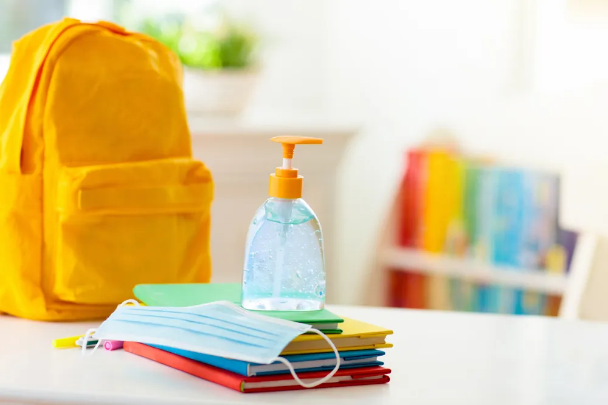

How to Avoid Germs at School

It’s time to go back to school , and if the prospect gives you more than a touch of germophobia, you’re far from alone. Keeping your children safe and healthy year-round is vital.
To keep your kids from getting sick, you need a sound understanding of how disease spreads . Once you can identify the means of transmission, you can reduce incidences of passing bugs back and forth. Here’s an overview of what you need to know and 12 techniques for keeping your kiddos as germ-free as possible.
How Infectious Disease Spreads
If you look on social media, you’ll find a flood of misinformation on how disease spreads. You need to seek information from credible sources, such as the World Health Organization , the Centers for Disease Control and Prevention (CDC) and the National Institutes of Health . These organizations employ top scientific minds and have the most credible and tested information.
Many germs currently live on your body without causing illness. Airborne viruses such as the flu spread through respiratory droplets and, less often, from touching contaminated surfaces. One positive thing that’s occurred in recent years is an improved awareness of personal health and the need to protect vulnerable members of our communities.
While experts remain concerned about the arrival of cold and flu season , taking precautions against one class of bug will safeguard you against others. You shouldn’t skip your flu shot , but masking up and improving hygiene will reduce your chances of catching this year’s strain.
Methods for Avoiding Germs at School
As a parent, you want to know how you can keep your children safe. Your kids are sure to face pressure from peers and perhaps instructors and administrators. Begin arming them with accurate information now to understand which behaviors are safe and which to avoid.
If you’re an adult learner, you likewise need to safeguard your health. Losing two weeks of class time can set you back for the rest of the semester, and tuition is a terrible thing to waste. The following 12 techniques aren’t fool proof protection against infection, but they will reduce your chances of getting severely ill.
Stay Home When Sick
In a perfect world, you would go to a drive-thru station, get a flu vaccine and move on with your day. Unfortunately, that’s not the reality you probably face. Further compounding the problem is the lack of a universal health care system in the U.S. Millions struggle without insurance, and often, those who do have coverage face copays and deductibles that put care out of reach. Some people stay away from health checkups out of fear — they don’t want to know they have a potentially severe disease that they can’t afford to treat.
The bottom line — stay home if you feel sick . You might not be contagious, but if you are, you could expose others unnecessarily. Furthermore, illness weakens your immune system, meaning you are more susceptible to additional infections.
Keep Distance From Those With Symptoms
Unfortunately, the imperfect world we inhabit also includes those who can’t afford to take a day at home. Some people, including courageous essential workers, can’t telecommute, and those who work in retail or food service may lack the resources for online learning. As a result, many parents are champing at the bit for schools to reopen.
Train your little ones to keep their distance from those exhibiting symptoms like sneezing and coughing, and do the same yourself. Please don’t act shocked or rude — allergies still exist, and folks like smokers may sound raspy, even when they don’t have an infection. However, since you don’t know if those sniffles stem from pollen or viruses, stay back. (For more tips check out our article on Best Flu Prevention Tips ).
Wash Your Hands
Does the “Happy Birthday” song start playing in your mind every time you use the restroom yet? Proper handwashing remains the top method for reducing the spread of germs in school. Teach your littles that they should lather up before they eat — make sure their instructor lets them use the restroom before the lunch bell rings.
Children also need to maintain this practice outside of the school building. They should wash after changing their 2-year-old sibling’s diaper or scooping out the litter box. Additionally, each trip to the restroom requires a thorough scrub. (For more information: Reasons Why Handwashing Is Important ).
Carry Sanitizer on Your Keychain
One of the ways schools plan to keep students healthy includes reducing bottlenecks in hallways , and that means limiting how many students may use the restroom at once. However, unless their classroom comes with a sink included, this lack of access can mean touching tiny faces with germy hands.
The second-best alternative to handwashing is the use of hand sanitizer . The FDA recommends using formulas containing 60-percent alcohol or more. Check to make sure that your brand hasn’t made the recall list.
Wear a Mask
Wearing a face covering over your nose and mouth reduces the risk of infection from viruses that spread through respiratory droplets. Please avoid social media misinformation about masks causing harm and follow CDC guidelines .
You can test the efficacy with a home science experiment if you have a high-mess tolerance. Take a handful of glitter and blow it onto a table. Now, take a woven placemat — even a lacy one — and tape it to a clean section of the surface. Repeat the shiny sprinkling and notice how the covered region stays less contaminated with sparkly bits. (Here’s How to Make a Face Mask at Home and Where to Buy Affordable Face Masks ).
Wipe Down Surfaces
While your child’s teacher will keep wipes handy, and custodians should sanitize more thoroughly at night, sneezes and sniffles happen in between. Make sure your child — or you — keep sanitizer wipes in your backpack.
Make sure your brand makes the EPA-approved list of disinfectants to kill the majority of viruses. Substances like vinegar will not destroy troublesome bugs.
Avoid Sharing Supplies
Your child’s pencil tip broke, and they don’t feel like raising their hand to use the sharpener. Instead, they borrow a spare from their closest seatmate — and the replacement bears teeth marks and saliva.
Make sure you pack ample pencils and pens in your child’s backpack. You might want to switch to mechanical pencils to avoid using a collective sharpener.
Practice Hands Off
One of the most pressing challenges facing schools involves training children to keep their hands to themselves. Start these lessons at home.
You can reinforce this skill with younger children by playing “hot potato.” In this variation, other people’s bodies and belongings are the spuds, and touching can lead to a penalty.
Save the Snack for Later
If you touch your mucous membranes after handling a contaminated object, you give germs up to 11 opportunities per hour to lay you low. Part of avoiding touching your face includes postponing snack time.
If your child has a condition like diabetes that requires them to eat to regulate their blood sugar, train them to use hand sanitizer before snack time. They need to follow this guidance even if they feel woozy.
Wear Your Glasses
Contact-lens wearers touch their faces more often than others to rub away eye irritation. Have your teen put vanity aside and don their glasses for back to school.
Won’t they still have their hands toward their face when they push their spectacles up the bridge of their nose? There’s a difference — they aren’t touching any mucous membranes the way they must if they have to adjust a contact lens.
Sneeze Into Your Sleeve
Even if you wear a face mask, that protection alone doesn’t give you a free pass to let a sneeze rip whenever you feel a tickle. Try to sneeze or cough into your sleeve, assuming one doesn’t catch you off-guard.
You should avoid using your hands in case germs sneak around the corners of your face covering. You don’t manipulate too many objects with your shoulder or elbow, making them the safer bets.
Maintain Social Distancing
When taking other precautions like increasing hygiene measures and masking up, you still need to abide by social distancing rules. How far should you stay apart? While the CDC recommends 6-feet, the activity you participate in influences your likelihood of spreading viruses.
One study in the New England Journal of Medicine showed that airborne droplets could travel up to 27-feet after someone coughs or sneezes. Activities like singing in a choir require more space between participants. Factors such as room temperature and humidity can influence spread, and individual susceptibility also impacts whether you’ll become sick if an airborne germ floats your way.
Source: https://activebeat.com/your-health/children/how-to-avoid-germs-at-school/